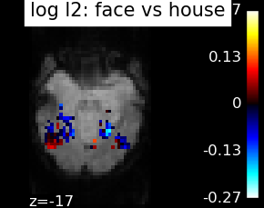
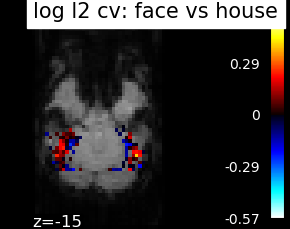
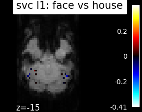
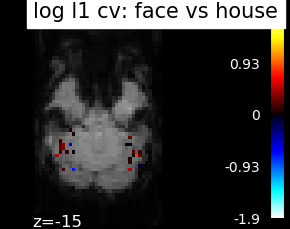
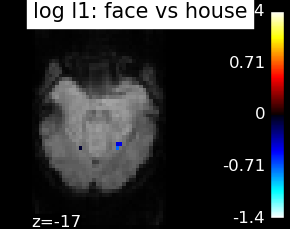
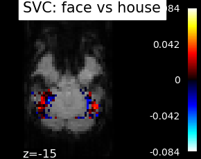
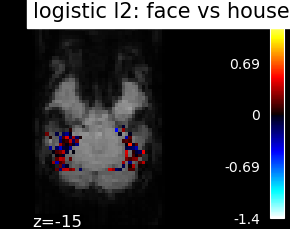
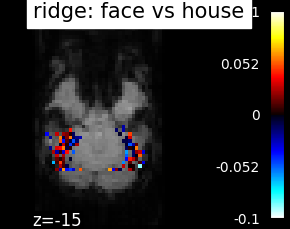
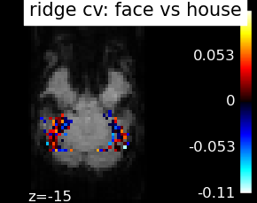

2.2. Choosing the right predictive model¶
This page gives a few simple considerations on the choice of an estimator. It is slightly oriented towards a decoding application, that is the prediction of external variables such as behavior or clinical traits from brain images. For a didactic introduction to decoding with nilearn, see the dedicated section of the nilearn documentation.
Contents
2.2.1. Predictions: regression, classification and multi-class¶
2.2.1.1. Regression¶
A regression problem is a learning task in which the variable to predict
–that we often call y– is a continuous value, such as an age.
Encoding models 1 typically call for regressions.
- 1
Naselaris et al, Encoding and decoding in fMRI, NeuroImage Encoding and decoding in fMRI.2011 http://www.ncbi.nlm.nih.gov/pubmed/20691790
2.2.1.2. Classification: two classes or multi-class¶
A classification task consists in predicting a class label for each observation. In other words, the variable to predict is categorical.
Often classification is performed between two classes, but it may well be applied to multiple classes, in which case it is known as a multi-class problem. It is important to keep in mind that the larger the number of classes, the harder the prediction problem.
Some estimators support multi-class prediction out of the box, but many work by dividing the multi-class problem in a set of two class problems. There are two noteworthy strategies:
- One versus All
sklearn.multiclass.OneVsRestClassifierAn estimator is trained to distinguish each class from all the others, and during prediction, the final decision is taken by a vote across the different estimators.- One versus One
sklearn.multiclass.OneVsOneClassifierAn estimator is trained to distinguish each pair of classes, and during prediction, the final decision is taken by a vote across the different estimators.
The “One vs One” strategy is more computationally costly than the “One vs All”. The former scales as the square of the number of classes, whereas the latter is linear with the number of classes.
See also
Confusion matrix The confusion matrix,
sklearn.metrics.confusion_matrix is a useful tool to
understand the classifier’s errors in a multiclass problem.
2.2.2. Setting estimator parameters¶
Most estimators have parameters that can be set to optimize their performance. Importantly, this must be done via nested cross-validation.
Indeed, there is noise in the cross-validation score, and when we vary the parameter, the curve showing the score as a function of the parameter will have bumps and peaks due to this noise. These will not generalize to new data and chances are that the corresponding choice of parameter will not perform as well on new data.
With scikit-learn nested cross-validation is done via
sklearn.model_selection.GridSearchCV. It is unfortunately time
consuming, but the n_jobs argument can spread the load on multiple
CPUs.
2.2.3. Different linear models¶
There is a wide variety of classifiers available in scikit-learn (see the scikit-learn documentation on supervised learning). Here we apply a few linear models to fMRI data:
SVC: the support vector classifier
SVC cv: the support vector classifier with its parameter C set by cross-validation
log l2: the logistic regression with l2 penalty
log l2 cv: the logistic regression with l2 penalty with its parameter set by cross-validation
log l1: the logistic regression with l1 penalty: sparse model
log l1 50: the logistic regression with l1 penalty and a high sparsity parameter
log l1 cv: the logistic regression with l1 penalty with its parameter (controlling the sparsity) set by cross-validation
ridge: the ridge classifier
ridge cv: the ridge classifier with its parameter set by cross-validation
Note
The SVC is fairly insensitive to the choice of the regularization parameter
cross-validation (CV) takes time
The ridge and ridge CV are fast, but will not work well on ill-separated classes, and, most importantly give ugly weight maps (see below)
Parameter selection is difficult with sparse models
There is no free lunch: no estimator will work uniformely better in every situation.
Note that what is done to the data before applying the estimator is often more important than the choice of estimator. Typically, standardizing the data is important, smoothing can often be useful, and confounding effects, such as session effect, must be removed.
The corresponding weight maps (below) differ widely from one estimator to the other, although the prediction scores are fairly similar. In other terms, a well-performing estimator in terms of prediction error gives us little guarantee on the brain maps.
        Decoding on simulated data
Simple simulations may be useful to understand the behavior of a given decoder on data. In particular, simulations enable us to set the true weight maps and compare them to the ones retrieved by decoders. A full example running simulations and discussing them can be found in Example of pattern recognition on simulated data Simulated data cannot easily mimic all properties of brain data. An important aspect, however, is its spatial structure, that we create in the simulations.